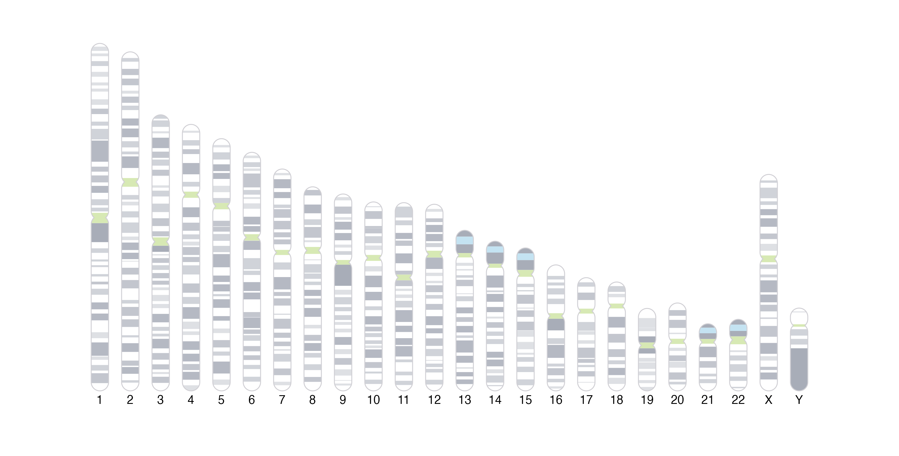

Beyond providing functions for plotting and arranging various genomic
datasets, plotgardener also gives users the functionality
to plot other elements within a plotgardener page
layout:
In addition to a genomic axis label, it can also be useful to include
an ideogram representation of a chromosome to give a broader context of
the location of genomic data. UCSC Giemsa stain cytoband information for
various genomic assemblies is retrieved from AnnotationHub
for default assemblies, but users can also provide their own Giemsa
stain information if they desire.
Ideograms can be plotted both vertically and horizontally:
library(AnnotationHub)
library(TxDb.Hsapiens.UCSC.hg19.knownGene)
library(GenomeInfoDb)
## Get sizes of chromosomes to scale their sizes
tx_db <- TxDb.Hsapiens.UCSC.hg19.knownGene
chromSizes <- GenomeInfoDb::seqlengths(tx_db)
maxChromSize <- max(chromSizes)
pageCreate(
width = 8.35, height = 4.25, default.units = "inches",
showGuides = FALSE, xgrid = 0, ygrid = 0
)
xCoord <- 0.15
for (chr in c(paste0("chr", seq(1, 22)), "chrX", "chrY")) {
height <- (4 * chromSizes[[chr]]) / maxChromSize
plotIdeogram(
chrom = chr, assembly = "hg19",
orientation = "v",
x = xCoord, y = 4,
width = 0.2, height = height,
just = "bottom"
)
plotText(
label = gsub("chr", "", chr),
x = xCoord, y = 4.1, fontsize = 10
)
xCoord <- xCoord + 0.35
}
pageCreate(
width = 6.25, height = 0.5, default.units = "inches",
showGuides = FALSE, xgrid = 0, ygrid = 0
)
plotIdeogram(
chrom = "chr1", assembly = "hg19",
orientation = "h",
x = 0.25, y = unit(0.25, "npc"), width = 5.75, height = 0.3
)The cytobands can also be hidden if a more minimal ideogram is preferred:
plotIdeogram(
showBands = FALSE,
chrom = "chr1", assembly = "hg19",
orientation = "h",
x = 0.25, y = unit(0.25, "npc"), width = 5.75, height = 0.3
)To highlight a specific genomic region on an ideogram, see the article Plot Annotations.
plotgardener also allows users to plot images and basic
shapes and elements to further enhance and customize plot layouts. The
functions plotCircle(), plotPolygon(),
plotRaster(), plotRect(),
plotSegments(), and plotText() provide an
intuitive way to plot basic grid grobs without
requiring any knowledge of grid graphics.
For example, we can include plotgardener’s Gene the
Gnome in our figures!:
library(png)
pg_type <- readPNG(system.file("images",
"pg-wordmark.png",
package = "plotgardener"))
gene_gnome <- readPNG(system.file("images",
"pg-gnome-hole-shadow.png",
package = "plotgardener" ))
pageCreate(
width = 5, height = 6, default.units = "inches",
showGuides = FALSE, xgrid = 0, ygrid = 0
)
plotRaster(
image = pg_type,
x = 2.5, y = 0.25, width = 4, height = 1.5, just = "top"
)
plotRaster(
image = gene_gnome,
x = 2.5, y = 1, width = 3.5, height = 3.5, just = "top"
)For more detailed usage of basic shape functions, see the
function-specific reference examples with ?function()
(e.g. ?plotCircle()).
We saw how to add ggplots and
ComplexHeatmaps to plotgardener layouts in the
vignette Incorporating ggplots and
other grid-based Bioconductor visualizations” with the
plotGG() function. Beyond customizing the coordinates and
dimensions of ggplots and grid-based
Bioconductor visualizations, plotGG() can also be used to
incorporate other grob and gtable objects.
Thus, plotgardener allows us to easily mix and arrange most
kinds of plot objects for ultimate customization.
sessionInfo()
#> R version 4.2.0 (2022-04-22)
#> Platform: x86_64-pc-linux-gnu (64-bit)
#> Running under: Ubuntu 20.04.4 LTS
#>
#> Matrix products: default
#> BLAS: /usr/lib/x86_64-linux-gnu/openblas-pthread/libblas.so.3
#> LAPACK: /usr/lib/x86_64-linux-gnu/openblas-pthread/liblapack.so.3
#>
#> locale:
#> [1] LC_CTYPE=en_US.UTF-8 LC_NUMERIC=C
#> [3] LC_TIME=en_US.UTF-8 LC_COLLATE=en_US.UTF-8
#> [5] LC_MONETARY=en_US.UTF-8 LC_MESSAGES=en_US.UTF-8
#> [7] LC_PAPER=en_US.UTF-8 LC_NAME=C
#> [9] LC_ADDRESS=C LC_TELEPHONE=C
#> [11] LC_MEASUREMENT=en_US.UTF-8 LC_IDENTIFICATION=C
#>
#> attached base packages:
#> [1] stats4 grid stats graphics grDevices utils datasets
#> [8] methods base
#>
#> other attached packages:
#> [1] png_0.1-7
#> [2] TxDb.Hsapiens.UCSC.hg19.knownGene_3.2.2
#> [3] GenomicFeatures_1.48.3
#> [4] AnnotationDbi_1.58.0
#> [5] Biobase_2.56.0
#> [6] GenomicRanges_1.48.0
#> [7] GenomeInfoDb_1.32.2
#> [8] IRanges_2.30.0
#> [9] S4Vectors_0.34.0
#> [10] AnnotationHub_3.4.0
#> [11] BiocFileCache_2.4.0
#> [12] dbplyr_2.2.1
#> [13] BiocGenerics_0.42.0
#> [14] plotgardenerData_1.2.0
#> [15] plotgardener_1.2.9
#>
#> loaded via a namespace (and not attached):
#> [1] colorspace_2.0-3 rjson_0.2.21
#> [3] ellipsis_0.3.2 showtext_0.9-5
#> [5] rprojroot_2.0.3 XVector_0.36.0
#> [7] fs_1.5.2 showtextdb_3.0
#> [9] bit64_4.0.5 interactiveDisplayBase_1.34.0
#> [11] fansi_1.0.3 xml2_1.3.3
#> [13] codetools_0.2-18 cachem_1.0.6
#> [15] knitr_1.39 jsonlite_1.8.0
#> [17] Rsamtools_2.12.0 shiny_1.7.2
#> [19] BiocManager_1.30.18 compiler_4.2.0
#> [21] httr_1.4.3 assertthat_0.2.1
#> [23] Matrix_1.4-1 fastmap_1.1.0
#> [25] cli_3.3.0 later_1.3.0
#> [27] htmltools_0.5.3 prettyunits_1.1.1
#> [29] tools_4.2.0 gtable_0.3.0
#> [31] glue_1.6.2 GenomeInfoDbData_1.2.8
#> [33] dplyr_1.0.9 rappdirs_0.3.3
#> [35] Rcpp_1.0.9 jquerylib_0.1.4
#> [37] pkgdown_2.0.6 vctrs_0.4.1
#> [39] Biostrings_2.64.0 strawr_0.0.9
#> [41] rtracklayer_1.56.1 xfun_0.31
#> [43] stringr_1.4.0 plyranges_1.16.0
#> [45] mime_0.12 lifecycle_1.0.1
#> [47] restfulr_0.0.15 XML_3.99-0.10
#> [49] zlibbioc_1.42.0 scales_1.2.0
#> [51] ragg_1.2.2 hms_1.1.1
#> [53] promises_1.2.0.1 MatrixGenerics_1.8.1
#> [55] parallel_4.2.0 SummarizedExperiment_1.26.1
#> [57] RColorBrewer_1.1-3 yaml_2.3.5
#> [59] curl_4.3.2 memoise_2.0.1
#> [61] ggplot2_3.3.6 yulab.utils_0.0.5
#> [63] sass_0.4.2 biomaRt_2.52.0
#> [65] stringi_1.7.8 RSQLite_2.2.15
#> [67] highr_0.9 BiocVersion_3.15.2
#> [69] BiocIO_1.6.0 desc_1.4.1
#> [71] filelock_1.0.2 BiocParallel_1.30.3
#> [73] rlang_1.0.4 pkgconfig_2.0.3
#> [75] systemfonts_1.0.4 matrixStats_0.62.0
#> [77] bitops_1.0-7 evaluate_0.15
#> [79] lattice_0.20-45 purrr_0.3.4
#> [81] GenomicAlignments_1.32.1 bit_4.0.4
#> [83] tidyselect_1.1.2 magrittr_2.0.3
#> [85] R6_2.5.1 generics_0.1.3
#> [87] DelayedArray_0.22.0 DBI_1.1.3
#> [89] pillar_1.8.0 KEGGREST_1.36.3
#> [91] RCurl_1.98-1.7 tibble_3.1.8
#> [93] crayon_1.5.1 utf8_1.2.2
#> [95] rmarkdown_2.14 sysfonts_0.8.8
#> [97] progress_1.2.2 data.table_1.14.2
#> [99] blob_1.2.3 digest_0.6.29
#> [101] xtable_1.8-4 httpuv_1.6.5
#> [103] gridGraphics_0.5-1 textshaping_0.3.6
#> [105] munsell_0.5.0 ggplotify_0.1.0
#> [107] bslib_0.4.0